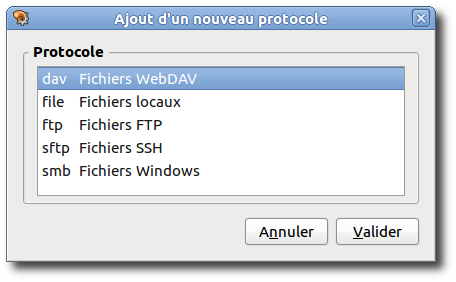

Manuel utilisateur de l'outil de configuration de Caja-Actions
I. Introduction
Caja-Actions™ est une extension de Caja™ dont la principale fonctionnalité consiste à permettre à l'utilisateur d'ajouter des actions de toute nature dans les menus contextuels du gestionnaire de fichiers. Ces actions peuvent être organisées en menus et sous-menus, exportées et partagées avec d'autres environnements bureau.
L'outil de configuration de Caja-Actions est l'interface utilisateur permettant de configurer avec précision comment, où et quand les actions apparaissent dans les menus contextuels de Caja™ et comment elles sont exécutées.
L'outil de configuration de Caja-Actions offre les fonctionnalités suivantes :
- définir et configurer les actions de a à z,
- organiser les actions en menus, sous-menus et ainsi de suite,
- importer et exporter des actions et des menus à partir d'un environnement extérieur.
Caja-Actions™ est également pourvu de fonctionnalités additionnelles telles que :
-
un greffon Caja™ pour exporter en temps réel sur D-Bus la sélection actuelle de fichiers.
-
un programme de ligne de commande susceptible de lancer n'importe quelle action.
Associé à l'interface D-Bus, ce programme permet à l'utilisateur de lancer n'importe quelle action à l'aide d'un raccourci clavier ; cette action s'applique aux éléments présentement sélectionnés dans le gestionnaire de fichiers.
-
un programme de ligne de commande capable de créer une nouvelle action.
Toutes ces fonctionnalités sont plus précisément décrites dans la documentation générale de Caja-Actions™.
II. Premiers pas
II.I. Lancement de l'outil de configuration de Caja-Actions
Vous pouvez lancer l'outil de configuration de Caja-Actions de plusieurs manières :
- Menu
-
Sélectionnez .
- Ligne de commande
-
Pour lancer l'outil de configuration de Caja-Actions à partir de la ligne de commande, saisissez :
caja-actions-config-tool
ensuite pressez Entrée.
Pour afficher toutes les options disponibles en ligne de commande, saisissez :
caja-actions-config-tool --help-all
ensuite pressez Entrée.
II.II. Le premier lancement
Quand vous lancez l'outil de configuration de Caja-Actions, la fenêtre suivante s'affiche.
La fenêtre principale vide de l'outil de configuration de Caja-Actions
La fenêtre principale de l'outil de configuration de Caja-Actions comporte :
- Une barre de menus.
-
Les menus de la barre des menus comportent toutes les commandes nécessaires à l'utilisation de l'outil de configuration de Caja-Actions.
Des raccourcis clavier sont disponibles pour certaines commandes :
- Ctrl+N
-
Créer une nouvelle action.
- Ctrl+S
-
Enregistrer les actions et les menus modifiés.
- Ctrl+Q
-
Quitter l'application.
- Ctrl+X
-
Couper la sélection en cours tout en la gardant dans le presse-papier.
- Ctrl+C
-
Copier la sélection en cours dans le presse-papier.
- Ctrl+V
-
Insérer le contenu du presse-papier devant l'élément sélectionné.
- Maj+Ctrl+V
-
Insérer le contenu du presse-papier en tant que sous-élement de l'élément sélectionné.
- Suppr.
-
Supprimer la sélection actuelle.
- F5
-
Recharger les actions et les menus.
- F1
-
Afficher l'aide.
- Une barre d'outils.
-
Plusieurs barres d'outils peuvent être affichées sous la barre des menus, selon les choix effectués dans le sous-menu .
- Une liste d'éléments.
-
La liste sur la gauche de la fenêtre principale comporte tous les éléments, soit actions, soit menus, actuellement accessibles pour modification dans l'outil de configuration de Caja-Actions.
Les éléments peuvent être triés dans l'ordre alphabétique naturel ou inverse. Ils peuvent également être gérés et organisés par l'utilisateur sans tri particulier.
Les éléments non-valides sont affichés en rouge.
Les éléments modifiés sont affichés en italiques.
- Des boutons de tri.
-
Trois boutons permettent de choisir le mode de tri.
- Des onglets de propriétés.
-
La partie droite de la fenêtre principale affiche tout ce qui est nécessaire pour définir comment, quand et où actions et menus sont affichés.
- Action/Menu
-
Définit dans quels menus de Caja™ l'élément apparaît et comment il est affiché.
- Commande
-
Définit la commande à exécuter et quels paramètres lui transmettre.
- Exécution
-
Définit comment votre commande est exécutée.
- Noms de base
-
Définit les filtres de noms de base que la sélection de Caja™ doit satisfaire pour que l'action ou le menu soit candidat à l'affichage.
- Types MIME
-
Définit les filtres des types MIME que la sélection de Caja™ doit satisfaire pour que l'action ou le menu soit candidat à l'affichage.
- Dossiers
-
Définit les filtres de dossiers que la sélection de Caja™ doit satisfaire pour que l'action ou le menu soit candidat à l'affichage.
- Protocoles
-
Définit les filtres de protocoles que la sélection de Caja™ doit satisfaire pour que l'action ou le menu soit candidat à l'affichage.
- Attributs
-
Définit les filtres d'attributs que la sélection de Caja™ doit posséder pour que l'action ou le menu soit candidat à l'affichage.
- Environnement
-
Définit certaines conditions d'environnement que la sélection de Caja™ doit satisfaire pour que l'action ou le menu soit candidat à l'affichage.
- Propriétés
-
Affiche les propriétés des éléments.
- Une barre d'état.
-
Cette barre affiche des informations d'état à propos de l'élément sur la ligne actuellement sélectionnée dans la liste des éléments.
Quand il n'y a aucune information pertinente à afficher, la barre d'état affiche le décompte des menus, actions ou profils chargés.
L'icône « lecture seule »
 est affichée dans la partie droite de la barre d'état si opportun.
est affichée dans la partie droite de la barre d'état si opportun.
II.III. Création de votre première action
Dans cet exemple, nous allons créer une action qui affiche des informations intéressantes à propos de la sélection actuelle.
Cette action requiert MateDialog™.
MateDialog™ est un programme qui permet de créer une interface utilisateur graphique à partir de la ligne de commande.
Il faut vérifier que ce programme est installé sur le système ; par exemple, saisissez dans un terminal la commande suivante :
matedialog
ensuite pressez Entrée.
Pour créer une nouvelle action, sélectionnez .
Une nouvelle action s'insère dans la liste des éléments et ses propriétés sont affichées dans les onglets du panneau de droite.
L'étiquette de l'action en cours de création ou de modification (uniquement celle-ci) est apposée au nom de l'application sur la barre titre.

Dans la Liste d'éléments, la nouvelle action est affichée en italique.
La graphie italique est utilisée pour rappeler que l'élément n'a pas été enregistré.
Comme autre rappel des modifications en attente, un astérisque (« * ») préfixe le nom de l'application dans la barre titre.
Cela consiste essentiellement à choisir quel sera l'intitulé de l'action dans le menu contextuel du gestionnaire de fichiers.
-
Saisissez « Ma première action » dans le champ de saisie Étiquette du contexte.
Le contrôle de saisie Étiquette du contexte contient l'étiquette de l'action telle que vous souhaitez la voir apparaître dans le menu contextuel du gestionnaire de fichiers.
Cet intitulé est une propriété obligatoire de l'action. Si le champ reste vide, l'action est alors considérée comme non-valide par Caja-Actions™ : elle est affichée en rouge dans la Liste d'éléments et n'est jamais candidate à l'affichage dans les menus contextuels du gestionnaire de fichiers.
-
Saisissez « Ceci effectue une action avec certains paramètres » dans le contrôle de saisie Informations.
Le contrôle de saisie Informations contient le texte que vous souhaitez voir affiché en tant que courte aide pour l'action.
-
Sélectionnez
 dans la liste déroulante Icône.
dans la liste déroulante Icône.Le choix dans l'élément Icône définit l'icône associée à l'action dans les menus contextuels du gestionnaire de fichiers et dans la barre d'outils.
Il y a deux manières de choisir l'icône associée à l'action :
- cliquer dans la liste déroulante Icônes pour choisir une icône.
- cliquer sur pour rechercher une image dans le système de fichiers.
Quand vous sélectionnez l'action dans le menu contextuel du gestionnaire de fichiers, cette commande est exécutée avec les paramètres de votre choix.
Cliquez sur l'onglet Commande pour afficher le volet qui vous permet de saisir la commande.
-
Saisissez matedialog dans le contrôle Chemin.
Le contrôle de saisie Chemin définit la commande qui est exécutée quand vous sélectionnez l'action dans le menu contextuel du gestionnaire de fichiers.
Il y a deux façons de définir la commande à exécuter :
- la saisir dans le contrôle Chemin.
- cliquer sur le bouton pour sélectionner un fichier exécutable dans le système de fichiers.
Si la commande saisie ne possède pas un chemin absolu alors elle est recherchée à l'exécution dans les répertoires définis par la variable d'environnement PATH.
-
Saisissez --info --text='%c élément(s) sélectionné(s) : %U' dans le champ Paramètres.
Paramètres contient les arguments passés à la commande lors de son exécution. Ils peuvent intégrer des paramètres qui sont développés au moment de l'exécution.
Si les champs Chemin et Paramètres sont tous deux vides, l'action est alors considérée comme non-valide : elle est affichée en rouge dans la Liste d'éléments ; elle ne sera jamais candidate à l'affichage dans les menus contextuels du gestionnaire de fichiers.
Pour enregistrer toutes les modifications en attente, sélectionnez .
Caja™ prend en compte automatiquement la nouvelle action et l'affiche dans son menu contextuel.
« Ma première action » dans le menu contextuel de Caja™
Le fait de cliquer sur l'élément dans le menu contextuel de Caja™ l'active et exécute la commande correspondante.

III. Utilisation de l'outil de configuration de Caja-Actions
- III.I. Définition des conditions
- III.II. Emplacement de l'action
- III.III. Action à exécuter
- III.IV. Utilisation de profils pour étendre vos actions
- III.V. Organisation des actions dans les menus
- III.VI. Tri de la liste des éléments
- III.VII. Édition
- III.VIII. Enregistrement des modifications
- III.IX. Exportation d'actions
- III.X. Importation d'actions
- III.XI. Réglage de vos préférences personnelles
III.I. Définition des conditions
Une action apparaît éventuellement, soit dans les menus contextuels du gestionnaire de fichiers Caja™, soit dans la barre d'outils, suivant les conditions que vous définissez pour elle.
Il est possible d'imposer des conditions relativement à l'emplacement sur lequel le gestionnaire de fichiers pointe actuellement ou bien relativement aux éléments actuellement sélectionnés dans cet emplacement.
Chaque fois que, dans le gestionnaire de fichiers, la sélection ou l'emplacement change, Caja-Actions™ vérifie l'ensemble des actions en comparant les conditions spécifiées par rapport au nouvel emplacement ou à la nouvelle sélection : toutes les conditions définies doivent être satisfaites pour que l'action soit réellement affichée.
- III.I.I. Conditions relatives aux noms de base
- III.I.II. Conditions relatives au type MIME
- III.I.III. Conditions relatives aux dossiers
- III.I.IV. Conditions relatives au protocole
- III.I.V. Conditions relatives aux attributs
- III.I.VI. Condition relative au nombre de sélections
- III.I.VII. Sélection du bureau
- III.I.VIII. Condition relative à la présence d'un exécutable
- III.I.IX. Condition d'enregistrement D-Bus
- III.I.X. Condition personnalisée
- III.I.XI. Condition relative à un processus en cours d'exécution
III.I.I. Conditions relatives aux noms de base
Vous pouvez décider que l'action apparaît en fonction du nom de base des éléments actuellement sélectionnés dans le gestionnaire de fichiers : vous pouvez définir que chaque élément de la sélection doit entrer dans une certaine typologie de nom de base en vérifiant simultanément qu'aucun élément parmi ceux sélectionnés n'ait un autre type de nom de base.
Cliquez sur l'onglet Noms de base pour afficher la page vous permettant de configurer les conditions relatives aux noms de base.
L'onglet des conditions relatives aux noms de base
En pratique, les conditions relatives aux noms de base se fondent sur une liste de motifs « Doit correspondre à l'un des » ou « Ne doit correspondre à aucun des ». Pour que l'action soit candidate compte tenu des conditions relatives aux noms de base, chaque élément de la sélection doit remplir toutes les conditions de la liste : le nom de base de chaque élément doit se conformer à au moins un des motifs « Doit correspondre à l'un des » tout en ne répondant à aucun des motifs « Ne doit correspondre à aucun des ».
Si un seul élément de la sélection ne remplit pas toutes les conditions définies, l'action ne sera pas affichée.
Si l'action cible le menu contextuel de la sélection, les conditions relatives aux noms de base seront vérifiées pour chacun des éléments sélectionnés. Si elle cible le menu contextuel de l'emplacement ou la barre d'outils, les conditions relatives aux noms de base seront vérifiées par rapport au nom de base de l'emplacement actif.
La définition d'une nouvelle condition relative aux noms de base s'effectue en deux étapes.
-
Définir le filtre de la nouvelle condition.
-
Appuyez sur la touche Inser ou cliquez sur le bouton pour ajouter un nouveau filtre de condition
-
Modifiez le filtre de la condition nouvellement ajoutée au nom de base auquel vous souhaitez qu'il se rapporte.
Une condition relative au nom de base peut utiliser les caractères joker « * » ou « ? ».
-
-
Indiquer s'il s'agit d'une condition « Doit correspondre à l'un des » ou « Ne doit correspondre à aucun des ».
Sur la même ligne, cliquez le bouton radio « Doit correspondre à l'un des » ou « Ne doit correspondre à aucun des » pour définir le type de condition.
Selon le système d'exploitation de la cible, assurez-vous que la case à cocher Respecter la casse est activée (ou non).
-
Si activée, tous les filtres sont considérés comme étant sensibles à la casse, ce qui signifie qu'un nom de fichier /mon/fichier est considéré différent de /Mon/Fichier.
C'est le comportement par défaut des systèmes de type Unix.
-
Si désactivée, les filtres sont considérés comme étant insensibles à la casse, ce qui signifie que /mon/fichier et /Mon/Fichier sont considérés identiques.
C'est probablement ce que vous souhaitez si vous ciblez un système du genre Windows™.
Pour supprimer une condition définie sur le nom de base, il suffit de la sélectionner et d'appuyer sur la touche Suppr (ou de cliquer sur le bouton ).
Par défaut, la condition relative au nom de base est uniquement « Doit correspondre à l'un des * ». Comme « * » correspond à tous les noms de base, ceci signifie que les conditions relatives aux noms de base ne sont pas considérées comme pertinentes pour l'action.
III.I.II. Conditions relatives au type MIME
Vous pouvez décider que votre action apparaît selon les types MIME des éléments de la sélection en cours dans le gestionnaire de fichiers : vous pouvez indiquer que chaque élément de la sélection doit être d'un type MIME donné tout en décidant simultanément qu'aucun élément sélectionné ne doit appartenir à tel ou tel autre type MIME.
Cliquez sur l'onglet Type MIME pour afficher la page qui vous permet de configurer les conditions relatives aux types MIME.

En pratique, les conditions relatives aux types MIME sont fondées sur une liste de motifs « Doit correspondre à l'un des » et « Ne doit correspondre à aucun des ». Pour que votre action soit candidate en regard des conditions relatives aux types MIME, tout élément de la sélection doit respecter toutes les conditions définies : le type MIME de chaque élément doit correspondre à au moins un des motifs « Doit correspondre à l'un des » tout en ne coïncidant avec aucun des motifs de la colonne « Ne doit correspondre à aucun des ».
Si un seul élément de la sélection ne remplit pas toutes les conditions définies, l'action ne sera pas affichée.
Lors de l'ouverture du menu contextuel de la sélection, les conditions relatives aux types MIME sont vérifiées pour chacun des éléments choisis. Lors de l'ouverture du menu contextuel de l'emplacement ou de la barre d'outils, les conditions relatives au type MIME sont contrôlées vis à vis du type MIME de l'emplacement actuel, qui se trouve être le type MIME bien connu « inode/directory ».
La définition d'une nouvelle condition fondée sur le type MIME s'effectue en deux étapes.
-
Définir le filtre de la nouvelle condition.
-
Appuyez sur la touche Inser ou cliquez sur le bouton pour ajouter un nouveau filtre de condition
-
Définissez le filtre de la condition nouvellement introduite pour le type MIME que vous voulez comparer.
Un type MIME doit être défini sous forme d'une expression groupe/sous-groupe.
Le joker « * » n'est pris en charge que dans certains cas :
- L'expression « */* » correspond à la totalité des types MIME. En tant qu'abréviation pratique, l'expression « * » est également acceptée dans le même but.
- Une chaîne groupe/* correspond à tous les sous-groupes du type MIME groupe.
- La chaîne */sous-groupe n'est pas acceptée ; ce joker n'est pas valide.
-
-
Indiquer s'il s'agit d'une condition « Doit correspondre à l'un des » ou « Ne doit correspondre à aucun des ».
Sur la même ligne, cliquez le bouton radio « Doit correspondre à l'un des » ou « Ne doit correspondre à aucun des » pour définir le type de condition.
Pour supprimer une condition définie sur le type MIME, il suffit de la sélectionner et d'appuyer sur la touche Suppr (ou de cliquer sur le bouton ).
Par défaut, la condition relative au type MIME est une condition « Doit correspondre à l'un des */* ». Comme « */* » recouvre tous les types MIME, cela signifie qu'aucun type MIME n'est pertinent vis à vis de l'action.
- all/all
-
Correspond à tous les éléments.
- all/allfiles
-
Correspond à tous les fichiers réguliers.
- inode/directory
-
Correspond uniquement aux répertoires.
III.I.III. Conditions relatives aux dossiers
Vous pouvez décider que l'action s'affiche selon le répertoire dans lequel sont contenus les éléments actuellement sélectionnés dans le gestionnaire de fichiers : vous pouvez définir que chaque élément de la sélection doit se situer dans telle ou telle partie de l'arborescence des fichiers et, simultanément, ne pas situer dans une autre.
Une condition relative aux dossiers doit se comprendre comme étant la définition de l'arborescence des fichiers dans laquelle l'élément en cours d'examen doit (ou ne doit pas) être situé : c'est un motif de noms de répertoires pour l'élément.
Cliquez sur l'onglet Dossiers pour ouvrir la page qui vous permet de configurer les conditions relatives aux dossiers.
En pratique, les conditions relatives aux dossiers se fondent sur une liste de motifs « Doit correspondre à l'un des » et « Ne doit pas correspondre à un des ». Pour que l'action soit candidate compte tenu des conditions relatives aux dossiers, chaque élément de la sélection doit être valide pour toutes les conditions fixées : chaque élément doit être situé dans un des dossiers définis dans « Doit correspondre à l'un des » sans appartenir à aucun de ceux définis dans « Ne doit correspondre à aucun des ».
Si un seul élément de la sélection ne remplit pas toutes les conditions définies, l'action ne sera pas affichée.
Quand l'action a pour cible le menu contextuel d'une sélection, les conditions relatives aux dossiers sont vérifiées en examinant le nom du répertoire de chaque élément sélectionné. Quand est ciblé le menu contextuel de l'emplacement ou la barre d'outils, ces mêmes conditions sont contrôlées par rapport à l'emplacement en cours.
La définition d'une nouvelle condition se rapportant à un dossier s'effectue en deux étapes.
-
Définir le filtre de la nouvelle condition.
-
Appuyez sur la touche Inser ou cliquez sur le bouton pour ajouter un nouveau filtre de condition
-
Définir le filtre de la condition nouvellement introduite au dossier que vous voulez comparer.
Les caractères « * » et « ? » sont acceptés en tant que jokers à tout niveau de définition du filtre des dossiers.
-
Ou bien cliquez sur le bouton pour sélectionner un dossier dans le système de fichiers.
-
-
Indiquer s'il s'agit d'une condition « Doit correspondre à l'un des » ou « Ne doit correspondre à aucun des ».
Sur la même ligne, cliquez le bouton radio « Doit correspondre à l'un des » ou « Ne doit correspondre à aucun des » pour définir le type de condition.
Pour supprimer une condition définie sur le dossier, il suffit de la sélectionner et d'appuyer sur la touche Suppr (ou de cliquer sur le bouton ).
Par défaut, la condition relative aux dossiers est une condition « Doit correspondre à l'un des / ». Étant donné que / est toujours situé à la racine des systèmes de fichiers de type Unix, tout élément sélectionné répond à cette condition.
Si vous travaillez dans un système Windows™, cette valeur par défaut risque en fait de ne pas convenir.
III.I.IV. Conditions relatives au protocole
Vous pouvez décider que l'action est affichée selon les protocoles des URI des éléments actuellement sélectionnés dans le gestionnaire de fichiers : vous pouvez décider que chaque élément de la sélection doit respecter tel ou tel protocole et, simultanément, de pas relever d'un autre.
Cliquez sur l'onglet Protocoles pour afficher la page qui permet de configurer les conditions relatives aux protocoles.
En pratique, les conditions relatives aux protocoles sont bâties sur une liste de motifs « Doit correspondre à l'un des » et « Ne doit correspondre à aucun des ». Pour que l'action soit candidate selon les conditions relatives aux protocoles, chaque élément de la sélection doit répondre à l'ensemble des conditions précisées : le protocole de chaque élément doit répondre à une au moins des conditions définies dans les motifs « Doit correspondre à l'un des » tout en ne répondant à aucune des conditions « Ne doit correspondre à aucun des ».
Si un seul élément de la sélection ne remplit pas toutes les conditions définies, l'action ne sera pas affichée.
Quand l'action cible le menu contextuel d'une sélection, les conditions relatives aux protocoles sont vérifiées par rapport aux éléments de la sélection actuelle. Quand est ciblé le menu contextuel d'un emplacement ou une barre d'outils, les conditions relatives aux protocoles sont contrôlées relativement au protocole de l'emplacement actuel.
La définition d'une nouvelle condition relative aux protocoles s'effectue en deux étapes.
-
Définir le filtre de la nouvelle condition.
-
Appuyez sur la touche Inser ou cliquez sur le bouton pour ajouter un nouveau filtre de condition
-
Établir le filtre de la condition nouvellement introduite au protocole à vérifier.
Les conditions relatives aux protocoles n'acceptent que le joker « * » qui signifie « tous protocoles ».
-
Ou bien cliquez sur pour sélectionner un protocole parmi ceux prédéfinis dans .
Figure 10 Choix d'un protocole parmi ceux prédéfinis par défautChoix d'un protocole parmi ceux prédéfinis par défaut
Un nouveau protocole ne peut être sélectionné ici que s'il n'a pas déjà été utilisé dans un autre filtre de protocole.
Pour sélectionner un nouveau protocole, cliquez sur , ou bien faites un double-clic sur la ligne voulue.
-
-
Indiquer s'il s'agit d'une condition « Doit correspondre à l'un des » ou « Ne doit correspondre à aucun des ».
Sur la même ligne, cliquez le bouton radio « Doit correspondre à l'un des » ou « Ne doit correspondre à aucun des » pour définir le type de condition.
Pour supprimer une condition définie sur le schéma, il suffit de la sélectionner et d'appuyer sur la touche Suppr (ou de cliquer sur le bouton ).
Par défaut, la condition relative au protocole est une condition « Doit correspondre à l'un des * », ce qui signifie que les protocoles n'ont pas de pertinence pour cette action.
III.I.V. Conditions relatives aux attributs
Les attributs sont des propriétés qu'un fichier peut exposer vis à vis de l'utilisateur.
Tous les attributs dépendent de l'utilisateur qui exécute la commande, excepté l'attribut Local.
Ainsi vous pouvez décider que l'action apparaît, ou pas, selon les attributs du ou des éléments choisis vis à vis de l'utilisateur actuel.
Cliquez sur l'onglet Attributs pour afficher la page qui permet de configurer les conditions relatives aux attributs.
En pratique, les conditions relatives aux attributs sont bâties sur une liste de motifs « Doit correspondre à tous les » et « Ne doit correspondre à aucun des ». Pour que l'action soit candidate selon les conditions relatives aux attributs, chaque élément de la sélection doit répondre à toutes les conditions définies : l'attribut de chaque élément doit répondre à chacun des attributs précisés dans les motifs « Doit correspondre à tous les » tout en ne répondant à aucun des attributs « Ne doit correspondre à aucun des ».
Si un seul élément de la sélection ne remplit pas toutes les conditions définies, l'action ne sera pas affichée.
Si la cible est le menu contextuel des sélections, les conditions relatives aux attributs sont vérifiées par rapport aux éléments de la sélection actuelle. Si c'est le menu contextuel de l'emplacement ou la barre d'outils, les conditions relatives aux attributs sont vérifiées par rapport à celles de l'emplacement actuel.
La définition d'une nouvelle condition relative aux attributs s'effectue en deux étapes.
-
Définir le filtre de la nouvelle condition.
-
Pressez la touche Inser pour insérer un filtre relatif à une nouvelle condition,
-
établissez le filtre de la condition nouvellement introduite à l'attribut à vérifier,
-
ou bien cliquez sur pour ouvrir la boîte de dialogue Ajout d'un nouvelattribut.
Un nouvel attribut ne peut être choisi dans cette liste que s'il n'a pas déjà été utilisé dans un autre filtre d'attribut.
Pour sélectionner un nouvel attribut, cliquez sur ou double-cliquez sur la ligne correspondante.
-
-
Indiquer s'il s'agit d'une condition « Doit correspondre à tous les » ou « Ne doit correspondre à aucun des ».
Sur la même ligne, cliquez sur le bouton radio Doit correspondre à tous les ou Ne doit correspondre à aucun des pour définir la condition correspondante.
Pour supprimer une condition définie sur les attributs, il suffit de la sélectionner et d'appuyer sur la touche Suppr (ou de cliquer sur le bouton ).
Par défaut, la liste des conditions relatives aux attributs est vide. Cela signifie qu'aucun attribut n'est pertinent pour l'action.
III.I.VI. Condition relative au nombre de sélections
Vous pouvez indiquer que l'action ne s'affiche que si le nombre de fichiers de la sélection actuelle dans le gestionnaire de fichiers possède une valeur ou une relation précise avec le nombre d'éléments donné.
Si l'action consiste à afficher les différences entre deux fichiers, vous pouvez définir ici « Nombre d'éléments = (égal à) 2 ».
Cliquez sur l'onglet Environnement pour afficher la page qui permet de configurer les conditions relatives à l'environnement.
L'onglet des conditions relatives à l'environnement
La condition relative au nombre de sélections se définit dans l'encadré Apparaît si la sélection contient.
Encadré de la condition sur le nombre d'éléments sélectionnés
Si la cible est le menu contextuel des sélections, les conditions relatives au nombre d'éléments seront vérifiées par rapport au nombre d'éléments de la sélection en cours. Si est ciblé le menu contextuel de l'emplacement ou la barre d'outils, la condition relative au nombre d'éléments sera vérifiée par rapport à zéro étant donné qu'il n'y a pas d'élément sélectionné dans ce cas.
Pour définir une condition sur le nombre d'éléments sélectionnés :
-
Sélectionnez dans la liste déroulante Nombre d'éléments l'opérateur à appliquer au nombre d'éléments :
< (strictement plus petit que) = (égal à) > (strictement plus grand que) -
Saisissez la valeur souhaitée comme référence de décompte.
Par défaut, la condition est « Nombre d'éléments > (strictement plus grand que) 0 », ce qui signifie que l'action est candidate à l'affichage dès qu'il y a au moins un élément sélectionné dans le gestionnaire de fichiers.
III.I.VII. Sélection du bureau
Vous pouvez définir que l'action :
- apparaît dans tous les cas,
- ou n'apparaît que dans des environnement bureau donnés,
- ou n'apparaît pas dans des environnements de bureau donnés.
Il n'y a qu'un seul choix possible entre ces trois éléments.
Cliquez sur l'onglet Environnement pour afficher la page qui permet de configurer les conditions relatives à l'environnement.
La sélection du bureau se définit dans l'encadré Environnement de bureau.
Pour définir la condition d'environnement de bureau :
-
D'abord sélectionnez le type de filtre :
votre action doit-elle toujours apparaître quel que soit l'environnement de bureau ? votre action doit-elle uniquement apparaître dans certains environnements de bureau ? votre action ne doit-elle jamais apparaître dans certains environnements de bureau ? -
Si l'action ne doit jamais apparaître, sélectionnez ensuite les environnements de bureau concernés dans la liste sur le côté droit.
La condition relative à l'environnement bureau est, par défaut, « Apparaît toujours », ce qui signifie que l'action sera candidate à l'affichage quel que soit l'environnement de bureau actuel.
III.I.VIII. Condition relative à la présence d'un exécutable
Vous pouvez décider que l'action n'apparaît que si un paquet requis est installé sur le système. Dans ce cas, cette vérification s'effectue en recherchant qu'un fichier donné, connu ou supposé connu comme fourni par le paquet, est bien présent dans le système de fichiers et est exécutable.
Cliquez sur l'onglet Environnement pour afficher la page qui permet de configurer les conditions relatives à l'environnement.
La condition relative à la présence d'exécutable se définit dans l'encadré Environnement d'exécution.
Pour définir le fichier concerné, saisissez son nom complet dans le contrôle de saisie Apparaît si le fichier suivant est exécutable ou bien cliquez sur le bouton pour sélectionner un fichier dans le système de fichiers.
Laissez ce champ vide si la condition n'est pas pertinente pour l'action.
Vous pouvez intégrer certains paramètres relatifs au fichier recherché. Les valeurs, qui dépendent des éléments de la sélection en cours, seront substituées dynamiquement à ces paramètres lors de l'exécution.
III.I.IX. Condition d'enregistrement D-Bus
Vous pouvez définir que l'action n'apparaît que si un nom donné est enregistré sur le système D-Bus lors de l'exécution.
Cliquez sur l'onglet Environnement pour afficher la page vous permettant de configurer les conditions relatives à l'environnement et allez dans l'encadré Environnement d'exécution.
Pour définir le nom concerné, saisissez-le dans le contrôle de saisie Apparaît si le nom suivant est enregistré sur D-Bus.
Laissez ce champ vide si la condition n'est pas pertinente pour l'action.
Vous pouvez incorporer des paramètres dans le nom à rechercher. Les valeurs, qui dépendent des éléments de la sélection en cours, seront substituées dynamiquement à ces paramètres lors de l'exécution.
III.I.X. Condition personnalisée
Vous pouvez définir que l'action n'apparaît que si une commande donnée renvoie la chaîne true sur la sortie standard.
Cliquez sur l'onglet Environnement pour afficher la page vous permettant de configurer les conditions relatives à l'environnement et allez dans l'encadré Environnement d'exécution.
Ceci permet de définir un filtre personnalisé en écrivant un petit script qui émet, ou n'émet pas, la chaîne true sur la sortie standard quand il est lancé.
La commande définie est saisie dans le contrôle Apparaît si la commande suivante renvoie « true » .
Laissez ce champ vide si la condition n'est pas pertinente pour l'action.
Vous pouvez incorporer des paramètres dans le nom du fichier à exécuter ou dans ses options. Les valeurs, qui dépendent des éléments de la sélection en cours, seront substituées dynamiquement à ces paramètres lors de l'exécution.
III.I.XI. Condition relative à un processus en cours d'exécution
Vous pouvez définir que l'action n'apparaît que si un binaire donné est en cours d'exécution.
Cliquez sur l'onglet Environnement pour afficher la page vous permettant de configurer les conditions relatives à l'environnement et allez dans l'encadré Environnement d'exécution.
Pour définir le binaire, saisissez son nom dans le contrôle de saisie Apparaît si le binaire suivant est en cours d'exécution ou bien cliquez sur le bouton pour choisir un fichier dans le système de fichiers.
Même si vous saisissez ici le nom et le chemin du binaire, seul son nom de base sera recherché dans la liste des processus en cours d'exécution.
Laissez ce champ vide si la condition n'est pas pertinente pour l'action.
Vous pouvez incorporer des paramètres dans le nom à rechercher. Les valeurs, qui dépendent des éléments de la sélection en cours, seront substituées dynamiquement à ces paramètres lors de l'exécution.
III.II. Emplacement de l'action
Le gestionnaire de fichiers Caja™ peut afficher l'action à divers emplacements, selon ce que vous précisez ici, et selon la sélection (ou non) de tel ou tel élément.
Cliquez sur l'onglet Action pour afficher la page qui vous permettra de cibler les emplacements des actions.
- III.II.I. Ciblage du menu contextuel de la sélection
- III.II.II. Ciblage du menu contextuel des emplacements
- III.II.III. Ciblage de la barre d'outils
- III.II.IV. Notes
III.II.I. Ciblage du menu contextuel de la sélection
Quand Afficher l'élément dans le menu contextuel de la sélection est coché, votre action est candidate à l'affichage dans le menu contextuel de Caja™ pour autant qu'il y ait au moins un élément sélectionné dans le gestionnaire de fichiers. L'action doit également s'accorder avec les éléments présentement sélectionnés. Pour être effectivement affichée, toutes les conditions définies pour l'action candidate doivent être respectées pour chacun des éléments de la sélection en cours dans le gestionnaire de fichiers Caja™.
Quand une action cible le menu contextuel de la sélection et est effectivement affichée dans le menu contextuel de Caja™, elle est également affichée dans le menu de Caja™.
Cette cible est cochée par défaut.
III.II.II. Ciblage du menu contextuel des emplacements
Quand Afficher l'élément dans le menu contextuel de l'emplacement est coché, votre action est candidate à l'affichage dans le menu contextuel de Caja™ quand il n'y a aucune sélection dans le gestionnaire de fichiers. L'action doit également s'accorder avec l'emplacement affiché. Pour être effectivement affichée, toutes les conditions définies pour l'action candidate doivent être respectées pour l'emplacement présentement affiché dans le gestionnaire de fichiers Caja™.
Quand une action cible le menu contextuel de l'emplacement et est effectivement affichée dans le menu contextuel de Caja™, elle est également affichée dans le menu de Caja™.
III.II.III. Ciblage de la barre d'outils
Quand Afficher l'élément dans la barre d'outils est coché, votre action est candidate à l'affichage dans la barre d'outils de Caja™.
Les actions affichées dans la barre d'outils ne s'accordent qu'avec l'emplacement présentement affiché dans le gestionnaire de fichiers et non avec les éléments qui pourraient être sélectionnés (ou pas). Pour être affichées, toutes les conditions relatives à l'action candidate doivent être respectées pour l'emplacement en cours.
III.II.IV. Notes
que ce soit le menu contextuel de la sélection ou de l'emplacement, elle est affichée à la fois dans les menus contextuels de Caja™ et dans les menus ou :
- avec Étiquette du contexte comme étiquette,
- avec l'Icône choisie,
- ces deux propriétés apparaissant avec les Informations.
Selon la configuration exacte de votre environnement bureau, l'icône est ou n'est pas affichée devant l'étiquette dans les menus.
Vous pouvez incorporer des paramètres dans l'étiquette, le nom de l'icône ou dans le texte d'information. Les valeurs qui dépendent des éléments de la sélection en cours seront substituées dynamiquement à ces paramètres lors de l'exécution.
elle est affichée
- avec Étiquette de la barre d'outils comme étiquette,
- avec l'Icône choisie,
- ces deux propriétés apparaissant avec les Informations.
Selon l'exacte configuration de votre environnement bureau, l'étiquette de la barre d'outils peut être ou ne pas être affichée avec l'icône dans la barre d'outils.
Par défaut, l'étiquette de la barre d'outils est la même que celle utilisée dans les menus. En décochant la case Utiliser le même intitulé pour l'icône dans la barre d'outils, vous pouvez définir une étiquette propre à la barre d'outils, généralement plus succincte que celle définie pour les menus.
Vous pouvez incorporer des paramètres dans l'étiquette de la barre d'outils, le nom de l'icône ou dans le texte d'information de l'infobulle. Les valeurs qui dépendent des éléments de la sélection en cours seront substituées dynamiquement à ces paramètres lors de l'exécution.
Une action peut cibler à la fois le menu contextuel de la sélection, le menu contextuel de l'emplacement et la barre d'outils ou bien un ou plus parmi ceux-ci.
Si aucune cible n'est définie, c-à-d. si aucune des trois cases à cocher n'est cochée, l'action n'est jamais affichée.
III.III. Action à exécuter
Vous souhaitez selon toute vraisemblance que votre action soit clôturée par l'exécution de quelque chose. Et bien, pragmatiquement, avoir quelque chose à exécuter est une des quelques conditions requises pour qu'une action soit considérée comme valide.
Comme nous l'avons déjà vu, la commande à exécuter est configurée dans l'onglet Commande.
Cette commande peut prendre des paramètres, qui eux-mêmes peuvent incorporer d'autres paramètres. Ces paramètres sont développés lors de l'exécution avec les valeurs dépendantes des éléments actuellement sélectionnés.
- III.III.I. Paramètres disponibles
- III.III.II. Emplacement où l'action est exécutée
- III.III.III. Mode d'exécution de l'action
III.III.I. Paramètres disponibles
Dans l'onglet Commande, cliquez sur le bouton Légende pour afficher la liste des paramètres disponibles.

Le bouton est un bouton bascule : cliquez une première fois pour afficher la boîte de dialogue Légende des paramètres ; cliquez une deuxième fois pour la faire disparaître.
Le mot « premier » peut se révéler trompeur étant donné qu'il se réfère à une liste interne d'éléments fournis par le gestionnaire de fichiers au greffon Caja-Actions™.
En particulier, cette liste n'a rien à voir avec l'affichage de la sélection que vous pourriez avoir faite dans la fenêtre du gestionnaire de fichiers. En fait, le « premier » élément choisi dans une sélection multiple n'est absolument pas défini et, en pratique, assez imprévisible.
III.III.II. Emplacement où l'action est exécutée
Votre action peut être exécutée dans un répertoire de travail donné.
Vous pouvez le préciser dans l'onglet Commande, dans le contrôle de saisie Répertoire de travail ou en cliquant sur pour choisir un dossier dans le système de fichiers.
Par défaut, le répertoire de travail est %d. La commande est donc lancée dans le répertoire de base du (premier) élément sélectionné.
Dans le cas particulier du paramètre %d, « premier » élément choisi, n'est pas critique parce qu'il est quasiment sûr que tous les éléments sélectionnés sont situés dans la même répertoire de base.
III.III.III. Mode d'exécution de l'action
Mises à part les conditions que la sélection doit respecter pour que l'action soit affichée dans les menus du gestionnaire de fichiers, Caja-Actions™ vous permet de définir précisément comment la commande est exécutée.
Cliquez sur l'onglet Exécution pour afficher la page qui configure l'exécution de la commande.
- III.III.III.I. Mode d'exécution
- III.III.III.II. Notification de lancement
- III.III.III.III. Classe de la fenêtre
- III.III.III.IV. Propriétaire de l'exécution
- III.III.III.V. Exécutions multiples
III.III.III.I. Mode d'exécution
Le mode d'exécution de la commande peut être choisi parmi les valeurs suivantes :
- Normal
-
Lance la commande dans l'interface utilisateur graphique standard.
- Dans un terminal
-
Ouvre le terminal préféré de l'environnement bureau et y lance la commande.
- Incorporé
-
Utilise une fonctionnalité spéciale du gestionnaire de fichiers qui peut autoriser l'ouverture d'un terminal dans sa fenêtre.
Étant donné que Caja™ ne dispose pas de cette fonctionnalité, cette option est strictement équivalente à l'option Terminal.
- Affichage des sorties
-
Ouvre le terminal préféré de l'environnement bureau et y lance la commande. À la fin, les flux standard (stdout, stderr) sont rassemblés et affichés.
Par défaut, le mode d'exécution d'une commande est Normal. Cela signifie que la commande sera exécutée sans aucune procédure particulière avant ou après son lancement.
III.III.III.II. Notification de lancement
Si le mode d'exécution de la commande est Normal, et si vous savez que l'application envoie un message remove avec la variable d'environnement DESKTOP_STARTUP_ID définie, alors cochez la case Notifier le démarrage.
Consultez Définition des protocoles de notification de démarrage (Startup Notification Protocol Specification) pour plus de détails.
III.III.III.III. Classe de la fenêtre
Si le mode d'exécution de la commande est Normal et si vous savez que l'application correspond à au moins une fenêtre avec un nom de classe donné, alors saisissez ce nom dans le contrôle Classe de lancement du Window Manager.
Consultez Définition des protocoles de notification de démarrage (Startup Notification Protocol Specification) pour plus de détails.
III.III.III.IV. Propriétaire de l'exécution
Configuration du propriétaire du lancement
Saisissez dans le contrôle Exécuter en tant qu'utilisateur, le nom ou l'UID de l'utilisateur au nom de qui la commande sera lancée.
Si vous ne saisissez rien dans ce champ, la commande est alors exécutée au nom de l'utilisateur en cours.
III.III.III.V. Exécutions multiples
Vous pouvez souhaiter que la commande soit exécutée une fois, en lui donnant la liste des éléments sélectionnés comme argument.
Vous pouvez aussi préférer que votre commande soit répétée pour chaque élément sélectionné, en donnant pour chaque exécution un élément différent comme argument.
En fait, Caja-Actions™ gère automatiquement ces deux comportements selon la forme et l'ordre des paramètres dans les arguments de la commande.
Bien que certains paramètres ne dépendent pas du nombre d'élément sélectionnés (par ex. « %c », le nombre de sélections lui-même), la plupart ont deux déclinaisons :
- une au « singulier », par ex. « %b », le nom de base de l'élément sélectionné ;
- une au « pluriel », par ex. « %B », la liste séparée par des espaces des noms de base des éléments sélectionnés.
Quand la sélection est vide ou ne comporte qu'un seul élément, ces deux formes sont rigoureusement équivalentes pour ce qui concerne ce paragraphe.
Quand la sélection comporte plus d'un élément :
- si le premier paramètre pertinent est au « singulier », alors Caja-Actions™ considère que la commande n'est susceptible de traiter qu'un seul élément à la fois, et donc doit être lancée une fois pour chaque élément sélectionné ;
- au contraire, si le premier paramètre pertinent trouvé est au « pluriel », alors Caja-Actions™ considère que la commande est capable de traiter la liste d'éléments, et donc la commande n'est exécutée qu'une seule fois ;
- si tous les paramètres trouvés ne sont pas pertinents, alors Caja-Actions™ considère par défaut que la commande ne doit être exécutée qu'une seule fois.
| Paramètre | Description | Répétition | ||
|---|---|---|---|---|
| %b | (premier) nom de base | au singulier | ||
| %B | liste des noms de base séparés par des espaces | au pluriel | ||
| %c | nombre d'éléments sélectionnés | non pertinent | ||
| %d | (premier) répertoire de base | au singulier | ||
| %D | liste des répertoires de base de chaque élément sélectionné séparés par des espaces | au pluriel | ||
| %f | (premier) nom de fichier | au singulier | ||
| %F | liste des noms des fichiers sélectionnés séparés par des espaces | au pluriel | ||
| %h | nom d'hôte du (premier) URI | non pertinent | ||
| %m | type MIME du (premier) élément sélectionné | au singulier | ||
| %M | liste des types MIME des éléments sélectionnés séparés par des espaces | au pluriel | ||
| %n | nom d'utilisateur du (premier) URI | non pertinent | ||
| %o | opérateur qui force l'exécution de l'action fichier par fichier | au singulier | ||
| %O | opérateur qui force l'exécution de l'action simultanément sur plusieurs fichiers | au pluriel | ||
| %p | numéro de port du (premier) URI | non pertinent | ||
| %s | protocole du (premier) URI | non pertinent | ||
| %u | (premier) URI | au singulier | ||
| %U | liste des URI sélectionnés séparés par des espaces | au pluriel | ||
| %w | (premier) nom de base sans extension | au singulier | ||
| %W | liste des noms de base sans extension séparés par des espaces | au pluriel | ||
| %x | (première) extension | au singulier | ||
| %X | liste des extensions séparées par des espaces | au pluriel | ||
| %% | le caractère « % » | non pertinent | ||
Supposons que le dossier actuel est /data et que la sélection comporte trois fichiers pierre, paul et jacques.
alors les trois commandes suivantes sont successivement exécutées :
| echo pierre |
| echo paul |
| echo jacques |
Ceci parce que %b marque un paramètre au singulier. La commande est lancée une fois pour chaque élément sélectionné.
alors la commande suivante est lancée :
| echo pierre paul jacques |
Ceci parce que %B marque un paramètre au pluriel. La commande est alors exécutée une seule fois avec la liste des éléments sélectionnés en tant que paramètre.
alors les trois commandes suivantes sont successivement exécutées :
| echo pierre pierre paul jacques |
| echo paul pierre paul jacques |
| echo jacques pierre paul jacques |
Ceci parce que le premier paramètre pertinent est %b et donc la commande est lancée une fois pour chaque élément sélectionné en remplaçant chaque fois le paramètre %b par l'élément correspondant. Le deuxième paramètre est décodé et ajouté en tant qu'argument de la commande exécutée.
alors la commande ci-après serait lancée :
| echo pierre paul jacques pierre |
Ceci parce que le premier paramètre pertinent est ici %B. La commande est alors lancée une seule fois en remplaçant %B par la liste des noms de base séparés par des espaces. Et comme la commande n'est exécutée qu'une seule fois, %b ne sera remplacé qu'une seule fois par le (premier) nom de base.
III.IV. Utilisation de profils pour étendre vos actions
Dans certains cas, vous souhaiterez qu'une action donnée se comporte légèrement différemment selon les éléments actuellement sélectionnés ou selon l'environnement d'exécution actuel.
Disons que nous avons une action qui ouvre un terminal dans l'emplacement en cours.
Vous l'avez configurée pour que votre terminal préféré s'ouvre à l'emplacement actuellement pointé par le gestionnaire de fichiers.
Mais que faire si vous voulez choisir un répertoire dans votre gestionnaire de fichiers et ouvrir directement le terminal dans ce répertoire ? Si vous restez dans l'emplacement présent du gestionnaire de fichiers, le terminal s'ouvre dans le répertoire parent du répertoire ciblé.
Une solution consiste à définir un nouveau profil pour l'action et de configurer ce profil pour ouvrir le terminal dans le répertoire ciblé.
À l'exécution, Caja-Actions™ examine successivement chaque profil associé à l'action. Si le premier profil cible un fichier alors que vous avez sélectionné un répertoire, alors Caja-Actions™ essaie uniquement avec le second profil.
Pour créer un nouveau profil, sélectionnez d'abord l'action dans la liste d'éléments, puis choisissez .
Un nouveau profil est créé pour votre action.
Vous pouvez maintenant définir les conditions à respecter pour que ce profil soit sélectionné et la commande à exécuter.
III.IV.I. Ordonnancement des profils à l'intérieur d'une action
Lors de l'exécution, Caja-Actions™ commence par examiner les conditions définies pour l'action.
Si ces conditions (les conditions de l'action) sont satisfaites, alors Caja-Actions™ examine dans l'ordre chaque profil.
Si les conditions définies dans le profil sont satisfaites, alors ce profil est validé et l'examen des autres profils n'est pas effectué.
Si aucun profil n'est considéré comme valide à l'exécution, l'action est elle-même considérée comme non valide et n'est pas affichée dans le menu contextuel du gestionnaire de fichiers.
Les profils d'une action sont classés et ils sont examinés dans cet ordre au moment de l'exécution. Le premier profil dont les conditions sont remplies sera validé et rendu sélectionnable dans le menu contextuel de Caja™.
Donc, l'ordre des profils peut se révéler important pour l'action : le premier profil valide trouvé sera le seul profil sélectionné.
Vous pouvez classer les profils dans une action de deux manières.
- Coupez le profil à déplacer, sélectionnez le profil avant lequel vous souhaitez placer le profil que vous venez de couper et collez-le.
- Cliquez sur le profil à déplacer et faites-le glisser à la bonne place.
III.V. Organisation des actions dans les menus
Au fur et à mesure que la liste d'actions s'agrandit, vous souhaiterez probablement l'organiser en menus, sous-menus et ainsi de suite.
Pour créer un nouveau menu, sélectionnez .
Il est possible de créer un menu n'importe où dans la liste des actions, mais pas à l'intérieur d'une action (c.-à-d. pas entre deux profils d'une action).
Comme pour les actions, l'endroit exact où un nouveau menu est inséré dépend de l'ordre de tri actuel :
- Ordre manuel :
-
Le nouveau menu est inséré juste avant l'action ou le menu actuellement sélectionné.
Ce positionnement n'est pas modifié quand vous modifiez ultérieurement l'étiquette du menu.
- Ordre alphabétique naturel (resp. inverse) :
-
Le nouveau menu est inséré à l'emplacement voulu compte tenu de son étiquette par défaut « Nouveau menu Caja ».
Son emplacement est automatiquement modifié chaque fois que vous modifiez l'étiquette du menu.
Comme pour les actions, un menu requiert également une étiquette et peut avoir une icône et des informations. Vous pouvez également définir certaines conditions pour que le menu soit candidat à l'affichage dans le menu contextuel de Caja™. Si les conditions définies ne sont pas réunies à l'exécution, alors la totalité du menu, y compris ses sous-menus, ses actions, etc. n'est pas affichée.
III.VI. Tri de la liste des éléments
Les actions et menus sont affichés dans les menus contextuels du gestionnaire de fichiers dans l'ordre où ils sont disposés dans la Liste d'éléments, dans le panneau de gauche de la fenêtre principale de l'outil de configuration de Caja-Actions.
Vous pouvez décider de :
- trier les actions et les menus dans l'ordre alphabétique naturel ou inverse de leurs étiquettes,
- ou de ne pas trier et de ranger les actions et les menus manuellement dans l'ordre qui vous plaît.
- III.VI.I. Tri alphabétique des actions et menus
- III.VI.II. Organisation manuelle des actions et menus
III.VI.I. Tri alphabétique des actions et menus
Dans ces modes, actions et menus sont triés selon leur étiquette dans chacun de leur parent.
Vous pouvez trier les actions par :
-
Cliquez sur le bouton (resp.
 ) pour trier les actions dans l'ordre alphabétique naturel (resp. inverse),
) pour trier les actions dans l'ordre alphabétique naturel (resp. inverse),
- ou modifiez la préférence correspondante.
III.VI.II. Organisation manuelle des actions et menus
Lorsque des éléments sont triés manuellement dans la liste, les nouveaux éléments sont normalement insérés juste à la position actuelle.
Il existe néanmoins le cas où une action est sélectionnée et non développée (ou ne possède actuellement qu'un seul profil). L'insertion d'un nouveau profil ne se fera pas devant l'action mais à l'intérieur de l'action.
Pour sélectionner ce mode :
-
Cliquez sur le bouton
 ,
,
- ou modifiez la préférence correspondante.
III.VII. Édition
Avec l'outil de configuration de Caja-Actions, vous pouvez en toute sécurité couper, copier vers et coller à partir du presse-papier.
- III.VII.I. Action de couper/suppression
- III.VII.II. Sélection multiple
III.VII.I. Action de couper/suppression
La suppression s'applique à la sélection actuelle.
Faites attention car la sélection et suppression de tous les profils d'une action la laisse sans profil, donc dans un état non valide. Le nom de l'action est écrit en lettres italiques (car modifiée) rouges (car non valide).
III.VII.II. Sélection multiple
La sélection multiple est possible dans l'outil de configuration deCaja-Actions. Vous pouvez étendre la sélection en pressant la touche Ctrl ou Maj tout en sélectionnant un élément à ajouter.
L'outil de configuration de Caja-Actions n'accepte que des sélections multiples homogènes. C'est-à-dire que vous pouvez sélectionner un ou plusieurs profils, un ou plusieurs menus ou actions. Une sélection multiple contenant à la fois des profils et des actions ou menus n'est pas autorisée parce que l'outil de configuration de Caja-Actions ne saurait pas où coller une telle sélection.
Notez que le fait de sélectionner n'importe quelle ligne sélectionne également les enfants de cette ligne. Ces enfants sont « implicitement sélectionnés » : ils font partie des opérations de modifications suivantes, mais ne sont pas pris en considération pour la vérification d'homogénéité de la sélection. En outre, ils ne peuvent pas être explicitement sélectionnés (ou désélectionnés).
III.VIII. Enregistrement des modifications
Pour enregistrer vos modifications, choisissez .
Toutes les modifications en instance sont enregistrées. Les nouveaux éléments sont créés par le premier fournisseur d'E/S disponible capable d'enregistrer.
Caja-Actions™ dispose également d'une fonctionnalité d'enregistrement automatique configurable dans la boîte de dialogue des .
III.XI. Réglage de vos préférences personnelles
Choisissez pour avoir accès à la configuration des préférences.
- III.XI.I. Préférences d'exécution
- III.XI.II. Préférences d'exécution
- III.XI.III. Préférences pour l'interface utilisateur (UI)
- III.XI.IV. Préférences pour l'importation
- III.XI.V. Préférences pour l'exportation
- III.XI.VI. Préférences pour les protocoles
- III.XI.VII. Préférences pour les fournisseurs d'E/S


IV. Informations diverses
Une nouvelle action est affichée avec la couleur rouge dans la liste d'éléments. La couleur rouge est un indicateur de non-validité de l'élément, c'est-à-dire que l'élément ne peut pas être candidat à l'affichage dans le menu contextuel de Caja™ parce que certaines informations sont soit manquantes, soit erronées. Dans ce cas, et même si l'action nouvellement insérée dispose de certains réglages par défaut, il manque la commande à exécuter pour que l'outil de configuration de Caja-Actions la considère comme valide.
V. Anomalies connues et limitations
- V.I. Anomalies connues
- V.II. Limitations connues
V.I. Anomalies connues
Les anomalies connues sont disponibles sur Bugzilla.
Si vous détectez une nouvelle anomalie dans Caja-Actions™, nous vous serons reconnaissant d'ouvrir un rapport d'anomalie en vous connectant sur le site Web Bugzilla.
Quand vous recherchez le dossier vers lequel vous souhaitez exporter dans l'assistant d'exportation de l'outil de configuration de Caja-Actions, il n'est pas possible de le sélectionner directement en tant que répertoire d'exportation. Au lieu de cela, allez dans le répertoire situé un niveau au-dessus et sélectionnez le répertoire vers lequel vous souhaitez faire une exportation.
V.II. Limitations connues
Depuis la version 3.0, le mode d'exécution peut être configuré dans l'outil de configuration de Caja-Actions mais cette fonctionnalité n'est pas encore reconnue par le greffon Caja™.
Ceci concerne le répertoire de travail, le mode d'exécution, la notification de démarrage et les paramètres propres à l'exécution.
Depuis la version 3.0, la suggestion de raccourci, telle que décrite dans la spécification DES-EMA ne peut pas être configurée dans l'outil de configuration de Caja-Actions et n'est pas reconnue par le greffon Caja™.
Depuis la version 3.0, les séparateurs de menu ne peuvent pas être configurés dans l'outil de configuration de Caja-Actions et ne sont pas reconnus par le greffon Caja™.
Vous noterez donc, que pour le moment, le gestionnaire de fichiers Caja™ n'autorise pas que ses greffons définissent des séparateurs de menu dans le menu contextuel.
VI. À propos de l'outil de configuration de Caja-Actions
La première version de Caja-Actions™ a été écrite par Frederic Ruaudel (<grumz@grumz.net>) et Rodrigo Moya (<rodrigo@mate-db.org>). Elle a été globalement améliorée et est actuellement maintenue par Pierre Wieser (<pwieser@trychlos.org>).
Les créations artistiques ont été gracieusement réalisées par Ulisse Perusin (<uli.peru@gmail.com>) et DragonArtz (http://www.dragonartz.net).
Pour obtenir plus d'informations à propos de Caja-Actions™, veuillez visiter le site Web de Caja-Actions™.
Pour rapporter une anomalie ou faire une suggestion à propos de Caja-Actions™, de l'Outil de configuration Caja-Actions ou de ce manuel, suivez les indications de la page des retours d'informations de MATE ou, si vous préférez, ouvrez une anomalie ou une demande d'amélioration sur le site Web Bugzilla.
A. GNU Free Documentation License
Version 1.3, 3 Novembre 2008
Copyright © 2000, 2001, 2002, 2007, 2008 Free Software Foundation, Inc.
Everyone is permitted to copy and distribute verbatim copies of this license document, but changing it is not allowed.
The purpose of this License is to make a manual, textbook, or other functional and useful document “free” in the sense of freedom: to assure everyone the effective freedom to copy and redistribute it, with or without modifying it, either commercially or noncommercially. Secondarily, this License preserves for the author and publisher a way to get credit for their work, while not being considered responsible for modifications made by others.
This License is a kind of “copyleft”, which means that derivative works of the document must themselves be free in the same sense. It complements the GNU General Public License, which is a copyleft license designed for free software.
We have designed this License in order to use it for manuals for free software, because free software needs free documentation: a free program should come with manuals providing the same freedoms that the software does. But this License is not limited to software manuals; it can be used for any textual work, regardless of subject matter or whether it is published as a printed book. We recommend this License principally for works whose purpose is instruction or reference.
This License applies to any manual or other work, in any medium, that contains a notice placed by the copyright holder saying it can be distributed under the terms of this License. Such a notice grants a world-wide, royalty-free license, unlimited in duration, to use that work under the conditions stated herein. The “Document”, below, refers to any such manual or work. Any member of the public is a licensee, and is addressed as “you”. You accept the license if you copy, modify or distribute the work in a way requiring permission under copyright law.
A “Modified Version” of the Document means any work containing the Document or a portion of it, either copied verbatim, or with modifications and/or translated into another language.
A “Secondary Section” is a named appendix or a front-matter section of the Document that deals exclusively with the relationship of the publishers or authors of the Document to the Document’s overall subject (or to related matters) and contains nothing that could fall directly within that overall subject. (Thus, if the Document is in part a textbook of mathematics, a Secondary Section may not explain any mathematics.) The relationship could be a matter of historical connection with the subject or with related matters, or of legal, commercial, philosophical, ethical or political position regarding them.
The “Invariant Sections” are certain Secondary Sections whose titles are designated, as being those of Invariant Sections, in the notice that says that the Document is released under this License. If a section does not fit the above definition of Secondary then it is not allowed to be designated as Invariant. The Document may contain zero Invariant Sections. If the Document does not identify any Invariant Sections then there are none.
The “Cover Texts” are certain short passages of text that are listed, as Front-Cover Texts or Back-Cover Texts, in the notice that says that the Document is released under this License. A Front-Cover Text may be at most 5 words, and a Back-Cover Text may be at most 25 words.
A “Transparent” copy of the Document means a machine-readable copy, represented in a format whose specification is available to the general public, that is suitable for revising the document straightforwardly with generic text editors or (for images composed of pixels) generic paint programs or (for drawings) some widely available drawing editor, and that is suitable for input to text formatters or for automatic translation to a variety of formats suitable for input to text formatters. A copy made in an otherwise Transparent file format whose markup, or absence of markup, has been arranged to thwart or discourage subsequent modification by readers is not Transparent. An image format is not Transparent if used for any substantial amount of text. A copy that is not “Transparent” is called “Opaque”.
Examples of suitable formats for Transparent copies include plain ASCII without markup, Texinfo input format, LaTeX input format, SGML or XML using a publicly available DTD, and standard-conforming simple HTML, PostScript or PDF designed for human modification. Examples of transparent image formats include PNG, XCF and JPG. Opaque formats include proprietary formats that can be read and edited only by proprietary word processors, SGML or XML for which the DTD and/or processing tools are not generally available, and the machine-generated HTML, PostScript or PDF produced by some word processors for output purposes only.
The “Title Page” means, for a printed book, the title page itself, plus such following pages as are needed to hold, legibly, the material this License requires to appear in the title page. For works in formats which do not have any title page as such, “Title Page” means the text near the most prominent appearance of the work’s title, preceding the beginning of the body of the text.
The “publisher” means any person or entity that distributes copies of the Document to the public.
A section “Entitled XYZ” means a named subunit of the Document whose title either is precisely XYZ or contains XYZ in parentheses following text that translates XYZ in another language. (Here XYZ stands for a specific section name mentioned below, such as “Acknowledgements”, “Dedications”, “Endorsements”, or “History”.) To “Preserve the Title” of such a section when you modify the Document means that it remains a section “Entitled XYZ” according to this definition.
The Document may include Warranty Disclaimers next to the notice which states that this License applies to the Document. These Warranty Disclaimers are considered to be included by reference in this License, but only as regards disclaiming warranties: any other implication that these Warranty Disclaimers may have is void and has no effect on the meaning of this License.
You may copy and distribute the Document in any medium, either commercially or noncommercially, provided that this License, the copyright notices, and the license notice saying this License applies to the Document are reproduced in all copies, and that you add no other conditions whatsoever to those of this License. You may not use technical measures to obstruct or control the reading or further copying of the copies you make or distribute. However, you may accept compensation in exchange for copies. If you distribute a large enough number of copies you must also follow the conditions in section 3.
You may also lend copies, under the same conditions stated above, and you may publicly display copies.
If you publish printed copies (or copies in media that commonly have printed covers) of the Document, numbering more than 100, and the Document’s license notice requires Cover Texts, you must enclose the copies in covers that carry, clearly and legibly, all these Cover Texts: Front-Cover Texts on the front cover, and Back-Cover Texts on the back cover. Both covers must also clearly and legibly identify you as the publisher of these copies. The front cover must present the full title with all words of the title equally prominent and visible. You may add other material on the covers in addition. Copying with changes limited to the covers, as long as they preserve the title of the Document and satisfy these conditions, can be treated as verbatim copying in other respects.
If the required texts for either cover are too voluminous to fit legibly, you should put the first ones listed (as many as fit reasonably) on the actual cover, and continue the rest onto adjacent pages.
If you publish or distribute Opaque copies of the Document numbering more than 100, you must either include a machine-readable Transparent copy along with each Opaque copy, or state in or with each Opaque copy a computer-network location from which the general network-using public has access to download using public-standard network protocols a complete Transparent copy of the Document, free of added material. If you use the latter option, you must take reasonably prudent steps, when you begin distribution of Opaque copies in quantity, to ensure that this Transparent copy will remain thus accessible at the stated location until at least one year after the last time you distribute an Opaque copy (directly or through your agents or retailers) of that edition to the public.
It is requested, but not required, that you contact the authors of the Document well before redistributing any large number of copies, to give them a chance to provide you with an updated version of the Document.
You may copy and distribute a Modified Version of the Document under the conditions of sections 2 and 3 above, provided that you release the Modified Version under precisely this License, with the Modified Version filling the role of the Document, thus licensing distribution and modification of the Modified Version to whoever possesses a copy of it. In addition, you must do these things in the Modified Version:
-
Use in the Title Page (and on the covers, if any) a title distinct from that of the Document, and from those of previous versions (which should, if there were any, be listed in the History section of the Document). You may use the same title as a previous version if the original publisher of that version gives permission.
-
List on the Title Page, as authors, one or more persons or entities responsible for authorship of the modifications in the Modified Version, together with at least five of the principal authors of the Document (all of its principal authors, if it has fewer than five), unless they release you from this requirement.
-
State on the Title page the name of the publisher of the Modified Version, as the publisher.
-
Preserve all the copyright notices of the Document.
-
Add an appropriate copyright notice for your modifications adjacent to the other copyright notices.
-
Include, immediately after the copyright notices, a license notice giving the public permission to use the Modified Version under the terms of this License, in the form shown in the Addendum below.
-
Preserve in that license notice the full lists of Invariant Sections and required Cover Texts given in the Document’s license notice.
-
Include an unaltered copy of this License.
-
Preserve the section Entitled “History”, Preserve its Title, and add to it an item stating at least the title, year, new authors, and publisher of the Modified Version as given on the Title Page. If there is no section Entitled “History” in the Document, create one stating the title, year, authors, and publisher of the Document as given on its Title Page, then add an item describing the Modified Version as stated in the previous sentence.
-
Preserve the network location, if any, given in the Document for public access to a Transparent copy of the Document, and likewise the network locations given in the Document for previous versions it was based on. These may be placed in the “History” section. You may omit a network location for a work that was published at least four years before the Document itself, or if the original publisher of the version it refers to gives permission.
-
For any section Entitled “Acknowledgements” or “Dedications”, Preserve the Title of the section, and preserve in the section all the substance and tone of each of the contributor acknowledgements and/or dedications given therein.
-
Preserve all the Invariant Sections of the Document, unaltered in their text and in their titles. Section numbers or the equivalent are not considered part of the section titles.
-
Delete any section Entitled “Endorsements”. Such a section may not be included in the Modified Version.
-
Do not retitle any existing section to be Entitled “Endorsements” or to conflict in title with any Invariant Section.
-
Preserve any Warranty Disclaimers.
If the Modified Version includes new front-matter sections or appendices that qualify as Secondary Sections and contain no material copied from the Document, you may at your option designate some or all of these sections as invariant. To do this, add their titles to the list of Invariant Sections in the Modified Version’s license notice. These titles must be distinct from any other section titles.
You may add a section Entitled “Endorsements”, provided it contains nothing but endorsements of your Modified Version by various parties — for example, statements of peer review or that the text has been approved by an organization as the authoritative definition of a standard.
You may add a passage of up to five words as a Front-Cover Text, and a passage of up to 25 words as a Back-Cover Text, to the end of the list of Cover Texts in the Modified Version. Only one passage of Front-Cover Text and one of Back-Cover Text may be added by (or through arrangements made by) any one entity. If the Document already includes a cover text for the same cover, previously added by you or by arrangement made by the same entity you are acting on behalf of, you may not add another; but you may replace the old one, on explicit permission from the previous publisher that added the old one.
The author(s) and publisher(s) of the Document do not by this License give permission to use their names for publicity for or to assert or imply endorsement of any Modified Version.
You may combine the Document with other documents released under this License, under the terms defined in section 4 above for modified versions, provided that you include in the combination all of the Invariant Sections of all of the original documents, unmodified, and list them all as Invariant Sections of your combined work in its license notice, and that you preserve all their Warranty Disclaimers.
The combined work need only contain one copy of this License, and multiple identical Invariant Sections may be replaced with a single copy. If there are multiple Invariant Sections with the same name but different contents, make the title of each such section unique by adding at the end of it, in parentheses, the name of the original author or publisher of that section if known, or else a unique number. Make the same adjustment to the section titles in the list of Invariant Sections in the license notice of the combined work.
In the combination, you must combine any sections Entitled “History” in the various original documents, forming one section Entitled “History”; likewise combine any sections Entitled “Acknowledgements”, and any sections Entitled “Dedications”. You must delete all sections Entitled “Endorsements”.
You may make a collection consisting of the Document and other documents released under this License, and replace the individual copies of this License in the various documents with a single copy that is included in the collection, provided that you follow the rules of this License for verbatim copying of each of the documents in all other respects.
You may extract a single document from such a collection, and distribute it individually under this License, provided you insert a copy of this License into the extracted document, and follow this License in all other respects regarding verbatim copying of that document.
A compilation of the Document or its derivatives with other separate and independent documents or works, in or on a volume of a storage or distribution medium, is called an “aggregate” if the copyright resulting from the compilation is not used to limit the legal rights of the compilation’s users beyond what the individual works permit. When the Document is included in an aggregate, this License does not apply to the other works in the aggregate which are not themselves derivative works of the Document.
If the Cover Text requirement of section 3 is applicable to these copies of the Document, then if the Document is less than one half of the entire aggregate, the Document’s Cover Texts may be placed on covers that bracket the Document within the aggregate, or the electronic equivalent of covers if the Document is in electronic form. Otherwise they must appear on printed covers that bracket the whole aggregate.
Translation is considered a kind of modification, so you may distribute translations of the Document under the terms of section 4. Replacing Invariant Sections with translations requires special permission from their copyright holders, but you may include translations of some or all Invariant Sections in addition to the original versions of these Invariant Sections. You may include a translation of this License, and all the license notices in the Document, and any Warranty Disclaimers, provided that you also include the original English version of this License and the original versions of those notices and disclaimers. In case of a disagreement between the translation and the original version of this License or a notice or disclaimer, the original version will prevail.
If a section in the Document is Entitled “Acknowledgements”, “Dedications”, or “History”, the requirement (section 4) to Preserve its Title (section 1) will typically require changing the actual title.
You may not copy, modify, sublicense, or distribute the Document except as expressly provided under this License. Any attempt otherwise to copy, modify, sublicense, or distribute it is void, and will automatically terminate your rights under this License.
However, if you cease all violation of this License, then your license from a particular copyright holder is reinstated (a) provisionally, unless and until the copyright holder explicitly and finally terminates your license, and (b) permanently, if the copyright holder fails to notify you of the violation by some reasonable means prior to 60 days after the cessation.
Moreover, your license from a particular copyright holder is reinstated permanently if the copyright holder notifies you of the violation by some reasonable means, this is the first time you have received notice of violation of this License (for any work) from that copyright holder, and you cure the violation prior to 30 days after your receipt of the notice.
Termination of your rights under this section does not terminate the licenses of parties who have received copies or rights from you under this License. If your rights have been terminated and not permanently reinstated, receipt of a copy of some or all of the same material does not give you any rights to use it.
The Free Software Foundation may publish new, revised versions of the GNU Free Documentation License from time to time. Such new versions will be similar in spirit to the present version, but may differ in detail to address new problems or concerns. See Copyleft.
Each version of the License is given a distinguishing version number. If the Document specifies that a particular numbered version of this License “or any later version” applies to it, you have the option of following the terms and conditions either of that specified version or of any later version that has been published (not as a draft) by the Free Software Foundation. If the Document does not specify a version number of this License, you may choose any version ever published (not as a draft) by the Free Software Foundation. If the Document specifies that a proxy can decide which future versions of this License can be used, that proxy’s public statement of acceptance of a version permanently authorizes you to choose that version for the Document.
“Massive Multiauthor Collaboration Site” (or “MMC Site”) means any World Wide Web server that publishes copyrightable works and also provides prominent facilities for anybody to edit those works. A public wiki that anybody can edit is an example of such a server. A “Massive Multiauthor Collaboration” (or “MMC”) contained in the site means any set of copyrightable works thus published on the MMC site.
“CC-BY-SA” means the Creative Commons Attribution-Share Alike 3.0 license published by Creative Commons Corporation, a not-for-profit corporation with a principal place of business in San Francisco, California, as well as future copyleft versions of that license published by that same organization.
“Incorporate” means to publish or republish a Document, in whole or in part, as part of another Document.
An MMC is “eligible for relicensing” if it is licensed under this License, and if all works that were first published under this License somewhere other than this MMC, and subsequently incorporated in whole or in part into the MMC, (1) had no cover texts or invariant sections, and (2) were thus incorporated prior to November 1, 2008.
The operator of an MMC Site may republish an MMC contained in the site under CC-BY-SA on the same site at any time before August 1, 2009, provided the MMC is eligible for relicensing.
To use this License in a document you have written, include a copy of the License in the document and put the following copyright and license notices just after the title page:
Copyright © YEAR YOUR NAME Permission is granted to copy, distribute and/or modify this document under the terms of the GNU Free Documentation License, Version 1.3 or any later version published by the Free Software Foundation; with no Invariant Sections, no Front-Cover Texts, and no Back-Cover Texts. A copy of the license is included in the section entitled “GNU Free Documentation License”.
If you have Invariant Sections, Front-Cover Texts and Back-Cover Texts, replace the “with… Texts.” line with this:
with the Invariant Sections being LIST THEIR TITLES, with the Front-Cover Texts being LIST, and with the Back-Cover Texts being LIST.
If you have Invariant Sections without Cover Texts, or some other combination of the three, merge those two alternatives to suit the situation.
If your document contains nontrivial examples of program code, we recommend releasing these examples in parallel under your choice of free software license, such as the GNU General Public License, to permit their use in free software.